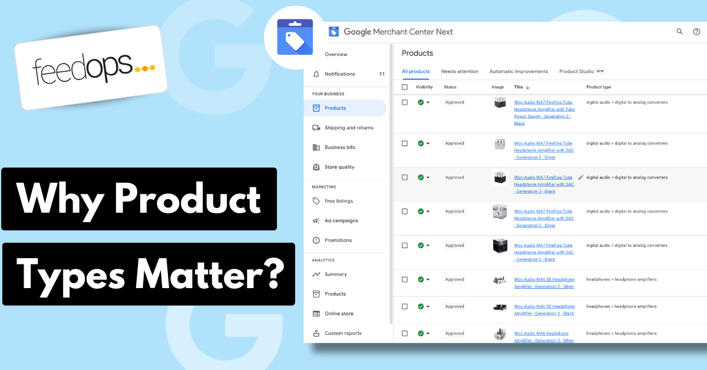

Merchant-defined
You choose the values. Product type should reflect how your catalogue is organised, not just how Google names categories.
Product type Google Shopping

Last updated:
Product Type Google Shopping is one of the most useful feed signals because product types work like product hashtags: they tell Google what the product is in your own catalogue language. Google says submitting product type can help it better understand what you sell and connect users with your products.
The short version
Google Merchant Center uses the product_type attribute to accept your own product categorisation system. Unlike Google product category, which uses Google's predefined taxonomy, product type is controlled by you. The superpower is classification: product types act like hashtags that tell Google exactly what the product is, while also giving your team a cleaner structure for campaigns, reporting, merchandising, and feed management.
You choose the values. Product type should reflect how your catalogue is organised, not just how Google names categories.
Product type can support Shopping campaign organisation, listing groups, filters, feed rules, and performance reporting.
Use broad-to-specific levels so teams can roll up performance cleanly and still inspect detailed product groups.
Definition
Product type is the product_type attribute in Google Merchant Center. It lets you submit your own product categorisation system in your product data. In Google's product type documentation, Google says submitting this attribute can help it better understand what you are selling and help connect users with your products. That is why product types are more than neat filing labels: they work like product hashtags that classify the product in a way Google and your campaign structure can use.
In plain English, product type is your catalogue category path inside the feed. It tells Google and your advertising team how a product fits into your store's own structure. A retailer might use Clothing > Women > Dresses > Maxi Dresses > Floral Maxi Dresses, while another might use Outdoor > Camping > Sleeping Gear > Sleeping Bags > Down Sleeping Bags.
Because product type is merchant-defined, it should be useful to the business. The best product type hierarchy reflects how people buy, how your team reports, how campaigns are grouped, and how your product range is actually managed. For the wider feed framework around this, use the Google Shopping Feed Optimization Guide.
Commercial impact
Product type matters commercially because it helps you segment Google Shopping campaigns around the categories you actually want to advertise. If you only want to push one category, protect budget for a profitable range, or align products to different campaign goals, product type gives you a clean way to separate those products without rebuilding the whole feed.
The second commercial impact is long-tail relevance. When product types go to five meaningful levels, they add more descriptive category phrases to the feed. A product type such as Home > Kitchen > Cookware > Frypans > Non-Stick Frypans gives Google more context than Cookware. It tells Google what the product is about in a more specific way.
That extra specificity can improve ROAS when the categorisation is relevant because it supports better long-tail matching. You are not stuffing random keywords into the feed. You are adding accurate product category language that describes the item more deeply, which can help Google connect the product with more specific, higher-intent Shopping searches.
It also makes performance easier to manage. A good product type structure helps you answer practical questions: Which category is wasting budget? Which five-level product group has strong conversion rate but low impression share? Which product families should be excluded, separated, or given different goals?
Category vs type
It is common to confuse product type with Google product category. They both describe product classification, but they have different jobs. Google product category maps products to Google's taxonomy. Product type maps products to your own taxonomy.
| Attribute | Who controls it? | Main purpose |
|---|---|---|
google_product_category |
Google taxonomy | Helps Google classify the product against a predefined category system. |
product_type |
Merchant-defined | Helps organise the feed around your catalogue, campaigns, reporting, and merchandising structure. |
Google's product type documentation says product type uses your own categorisation system, while Google product category uses predefined categories. It also notes that it is OK to provide the same value for both if that value is a supported Google product category. In practice, many retailers should treat them separately because business reporting and Google's taxonomy rarely line up perfectly.
Formatting
Product type is submitted in the product feed as your own category path for the product. In practice, it usually maps closely to the category structure on the website, because that is already how the retailer organises the catalogue. The important part is not punctuation. The important part is that the words deeply and clearly describe what the product is.
Google's product type documentation supports broad-to-specific product type values and says the first submitted product type value is the one used for bidding and reporting in Google Ads Shopping campaigns. For a strong feed, use deeper five-level category paths where the catalogue supports it, such as Home > Kitchen > Cookware > Frypans > Non-Stick Frypans. Treat that first value as the main product classification signal for the feed.
Examples
A strong product type describes the product group clearly enough for Google Ads segmentation and for Google to understand what the product is about. A weak product type is usually too shallow, too promotional, or filled with details that belong in other feed attributes.
| Weak product type | Better product type |
|---|---|
| Products | Home > Kitchen > Cookware > Frypans > Non-Stick Frypans |
| Sale | Clothing > Women > Dresses > Maxi Dresses > Floral Maxi Dresses |
| Accessories | Electronics > Mobile Accessories > Phone Cases > iPhone Cases > MagSafe iPhone Cases |
| Camping | Outdoor > Camping > Sleeping Gear > Sleeping Bags > Down Sleeping Bags |
The better examples are not better because they use a particular separator. They are better because they deeply classify the product. Top-level categories can help campaign structure, but deeper product type values help Google and your team understand whether the item is a frypan, a maxi dress, an iPhone case, or a sleeping bag.
Campaign use
Product type is useful because it brings catalogue logic into Google Ads work. If your feed has clean product types, your team can segment campaigns, review category performance, build product groups, and understand what product families are driving spend, revenue, and return. The Google Shopping Ads Management Guide explains how that feed structure turns into campaign decisions.
For example, a retailer selling homewares might see that Home > Bedroom > Bedding > Quilt Covers > Cotton Quilt Covers has strong revenue but weak margin, while Home > Kitchen > Cookware > Frypans > Non-Stick Frypans has lower volume but better return. With a clean product type structure, those patterns are easier to find and act on.
Common mistakes
Most product type problems are not syntax problems. They are structure problems. The feed technically submits a value, but that value is not useful enough for campaign work, reporting, or product data improvement.
Optimisation
Start by treating product type as a feed-level classification signal. It is most commonly used to segment Google Ads Shopping campaigns, but it also gives Google another way to understand what each product is about. The best product types usually follow the website's category logic, then go deeper where the website category is too broad.
Use the Google Merchant Center product data specification as the broader rulebook for feed quality. Product type is only one attribute. It works best when titles, descriptions, images, identifiers, categories, price, availability, and variant attributes are also clean.
FeedOps approach
The FeedOps approach is to use custom agents and LLMs inside the FeedOps workflow to automatically assign product types as products are added to the feed. Instead of waiting for a messy category export to limit performance, the workflow can classify new products into super descriptive product type paths that go deep enough to support Google Ads segmentation, long-tail Shopping relevance, and Google Shopping Graph readiness.
That means product types can be created and maintained as an ongoing feed operation, not a one-off cleanup project. As products change, new ranges launch, or new categories are added, FeedOps can help keep product_type values descriptive, consistent, and useful for both Google and campaign reporting.
Checklist
FAQ
Product type is the product_type attribute in Google Merchant Center. It lets merchants submit their own product categorisation system, such as Clothing > Women > Dresses > Maxi Dresses > Floral Maxi Dresses, so products can be organised for Shopping campaigns, reporting, and internal feed structure.
No. Google product category uses Google's predefined taxonomy. Product type is chosen by the merchant. Google product category helps Google classify products against Google's category system, while product type is useful for merchant-controlled grouping, bidding, reporting, and campaign organisation.
Product_type is optional for each product, but Google recommends submitting it for products used in campaign types because it can help Google understand what is being sold and can be used to organise Shopping campaigns.
Product type should be submitted in the product feed as your own category path for the product. It usually maps to the website category structure, but it should go deeper where that helps Google and your ads team understand what the product is.
Use descriptive category words and avoid variant attributes like size and colour, because those belong in their own feed fields.
Go as deep as your catalogue structure reasonably allows. A shallow product type such as Shoes is usually less useful than Footwear > Men's Shoes > Running Shoes > Trail Running Shoes > Waterproof Trail Running Shoes.
The point is to deeply categorise the product so Google can better understand what it is and your Google Ads campaigns can be segmented more clearly.
Yes, when product types are relevant and descriptive. They help segment Google Shopping campaigns and can also improve long-tail relevance by adding meaningful category phrases that describe what the product is.
A five-level product type can give Google more context than a broad department label, which can support stronger matching and better ROAS.
Google allows product_type to be submitted more than once, up to five times, but only the first value is used to organise bidding and reporting in Google Ads Shopping campaigns. For most advertisers, one clean primary product type is easier to manage.
Common mistakes include leaving product_type blank, using vague values such as Products or Sale, stopping at a shallow category level, using size or colour inside product type instead of the correct variant attributes, and copying Google product category instead of creating a descriptive merchant-defined category path.